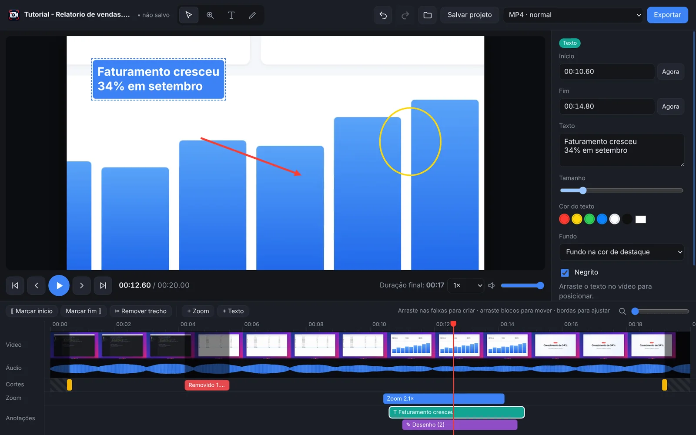
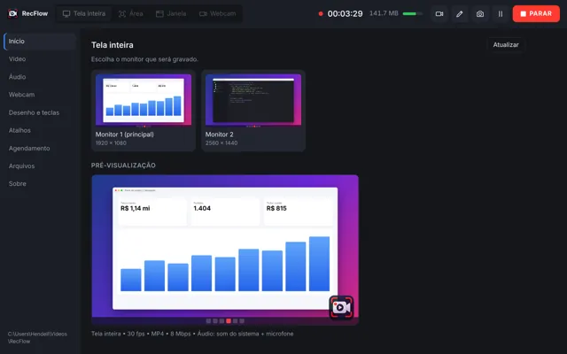
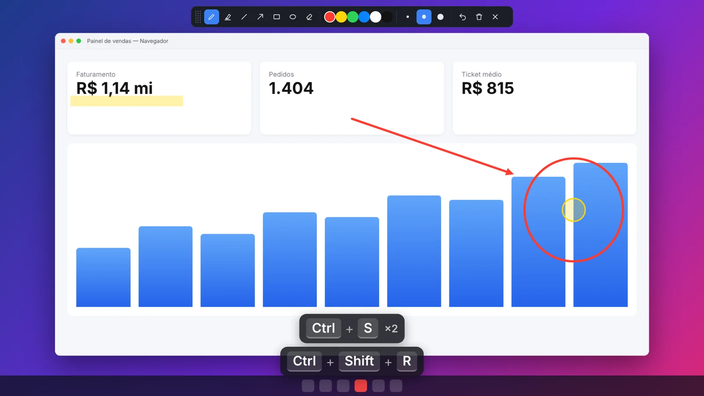

Grave, edite e compartilhe sua tela em minutos.
Tela, webcam e áudio na mesma gravação. Desenhe, mostre os atalhos que você usa e, quando parar, corte, dê zoom e escreva no vídeo, tudo no mesmo programa.


Tudo o que você precisa para gravar bem
Do tutorial rápido à aula completa: o RecFlow cuida da gravação, do áudio e da edição.
Conheça o RecFlow por dentro
Prints reais do programa. Clique para ampliar e use as setas para navegar.
Parou de gravar? O editor já abre.
Revise quadro a quadro e deixe o vídeo pronto sem precisar de outro programa.
- Cortar o início, o fim e trechos do meio
- Zoom animado em qualquer área da tela, com entrada e saída suaves
- Textos e desenhos com cor, fundo e tempo na tela
- Linha do tempo com miniaturas e forma de onda do áudio
- Desfazer e refazer ilimitados
- Projetos (.gtproj) para continuar a edição depois
Explique enquanto grava
Desenhe setas e círculos por cima de qualquer programa, destaque cliques do mouse e mostre no vídeo os atalhos que você usa. A barra de ferramentas não aparece na gravação.
- Caneta, marca-texto, seta, retângulo e elipse
- Teclas pressionadas com posição, tamanho e modo "só atalhos" para senhas
- Contagem regressiva de 3, 5 ou 10 segundos antes de começar
- Webcam flutuante que você arrasta a qualquer momento, com fundo desfocado

Três passos, do clique ao vídeo pronto
-
1
Escolha o que gravar
Tela inteira, uma área, uma janela ou só a webcam. Ligue o som do sistema e o microfone e confira tudo no gráfico de áudio.
-
2
Aperte F12
A contagem começa e a gravação também. Pause com Shift+F12, desenhe com Ctrl+Shift+D e mova a webcam quando quiser.
-
3
Edite e exporte
Ao parar, o editor abre com o vídeo. Corte, aplique zoom, escreva e exporte em MP4, para WhatsApp ou como GIF.
Passo a passo de cada recurso
Escolha um tema para ver como usar, com dicas e a tela correspondente.
Atalhos de teclado
Os atalhos de gravação funcionam em qualquer programa, mesmo com o RecFlow minimizado. Todos podem ser trocados na aba Atalhos.
Gravação (globais)
Editor de vídeo
Desenho na tela
Qual formato escolher?
Na gravação, o RecFlow salva em MP4 ou WebM. No editor, você escolhe como o vídeo final vai sair.
Leve, local e sem cadastro
Requisitos
- Windows 10 (versão 2004 ou mais recente) ou Windows 11, 64 bits
- 4 GB de RAM; 8 GB recomendado para gravar em 1080p a 60 fps
- Cerca de 400 MB livres para instalar, mais o espaço das gravações
- Webcam e microfone são opcionais
Privacidade
- Tudo é gravado e editado no seu computador
- Nada é enviado para a internet: sem conta, sem nuvem
- A redução de ruído e o desfoque usam IA que roda localmente
- Modo "só atalhos" evita mostrar o que você digita
Onde ficam os arquivos
- Vídeos e imagens:
Vídeos\RecFlow(pode trocar) - Projetos de edição: arquivos
.gtprojao lado do vídeo - Configurações:
%APPDATA%\RecFlow - A aba Arquivos lista tudo, com abrir, editar e lixeira
Perguntas frequentes
Fale com o desenvolvedor
Dúvidas, sugestões ou suporte: é só chamar.